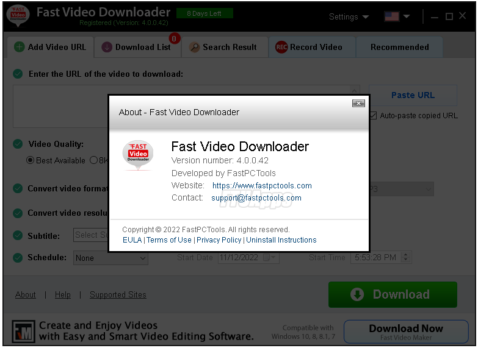

============================

Stats
Title: Fast Video Downloader v4.0.0.42 Multilingual Portable
Category: Apps
Type: PC Software
Language: English
Total size: 137.6 MB
Uploaded By: SunRiseZone
============================
Info:
!!! Remember I don't own or edit anything on links that might be on this torrent!!!
Visit >>> https://ftuapps.com/
Genuine cracked applications direct from the scene group.
A Team-FTU project!

Fast Video Downloader v4.0.0.42 Multilingual Portable
Fast Video Downloader is software, which allows you to download videos from youtube, dailymotion, vimeo, metacafe, facebook, bing and many more video sites and convert them to iPhone, iPad, iPod, Android, psp device compatible format. You may schedule your download list.
Features:
Download from
- Download videos from Youtube, Dailymotion, Vimeo, Metacafe, Facebook, Bing & more video sites.
Multiple download
- Download one or more video simultaneously on same time.
Download HD Video
- Download high resolution, Full HD (1080p), HD(720p) videos from YouTube and other videos sites (if video site supports High Definition Videos).
Download schedule
- Schedule your download video.
Video Search
- This is very smart feature. You may search videos & add to download list in a single click.
Paste Video URL
- Automatically paste video URL which you copied.
Convert Videos
- Convert downloaded videos to Iphone, Ipad, Ipod, Android, psp device compatible format. You can also convert videos to 3gp, AVI format.
Convert Video Resolution
- Change resolution of the video without changing format.
Convert Video Format
- Automatic convert videos when download complete. Convert for iPhone, iPad, iPod, Android, PSP device compatible format. You can also convert videos to 3GP, AVI format.
Fast Speed
- Application does not apply any restriction on download speed of the videos. So video download will complete in less time.
Proxy Setting
- If you use proxy for connecting to internet then you can specify that proxy to download videos.
Submit Feedback
- Send and share your using experience for improvement also report video URL, if have any error.
What's New:
- Updates: official site does not provide any info about changes in this version.
Operating System:
- Windows 11, 10, 8, 7, Vista and XP (32bit + 64bit)
Build Info:
- Ignore the day left alert, the program is fully registered and all features enabled.
Homepage: http://fastpctools.com/fvd/
Run & Enjoy, No activation or installation is required / Instruction is Included in the folder!
AntiVirus Scanned Result for User-End >>>
File: https://www.virustotal.com/gui/file/024c4eb9206bade94dfa20038eb861ff4a1e67e1dd38ba857bd673d517badbb2/detection
- Read the False-Positive Infection guidance on web, get knowledge before making noise!
============================
Stats
Title: Fast Video Downloader v4.0.0.42 Multilingual Portable
Category: Apps
Type: PC Software
Language: English
Total size: 137.6 MB
Uploaded By: SunRiseZone
============================
Info:
!!! Remember I don't own or edit anything on links that might be on this torrent!!!
Visit >>> https://ftuapps.com/ Genuine cracked applications direct from the scene group. A Team-FTU project!

Fast Video Downloader v4.0.0.42 Multilingual Portable Fast Video Downloader is software, which allows you to download videos from youtube, dailymotion, vimeo, metacafe, facebook, bing and many more video sites and convert them to iPhone, iPad, iPod, Android, psp device compatible format. You may schedule your download list. Features: Download from - Download videos from Youtube, Dailymotion, Vimeo, Metacafe, Facebook, Bing & more video sites. Multiple download - Download one or more video simultaneously on same time. Download HD Video - Download high resolution, Full HD (1080p), HD(720p) videos from YouTube and other videos sites (if video site supports High Definition Videos). Download schedule - Schedule your download video. Video Search - This is very smart feature. You may search videos & add to download list in a single click. Paste Video URL - Automatically paste video URL which you copied. Convert Videos - Convert downloaded videos to Iphone, Ipad, Ipod, Android, psp device compatible format. You can also convert videos to 3gp, AVI format. Convert Video Resolution - Change resolution of the video without changing format. Convert Video Format - Automatic convert videos when download complete. Convert for iPhone, iPad, iPod, Android, PSP device compatible format. You can also convert videos to 3GP, AVI format. Fast Speed - Application does not apply any restriction on download speed of the videos. So video download will complete in less time. Proxy Setting - If you use proxy for connecting to internet then you can specify that proxy to download videos. Submit Feedback - Send and share your using experience for improvement also report video URL, if have any error. What's New: - Updates: official site does not provide any info about changes in this version. Operating System: - Windows 11, 10, 8, 7, Vista and XP (32bit + 64bit) Build Info: - Ignore the day left alert, the program is fully registered and all features enabled. Homepage: http://fastpctools.com/fvd/ Run & Enjoy, No activation or installation is required / Instruction is Included in the folder! AntiVirus Scanned Result for User-End >>> File: https://www.virustotal.com/gui/file/024c4eb9206bade94dfa20038eb861ff4a1e67e1dd38ba857bd673d517badbb2/detection - Read the False-Positive Infection guidance on web, get knowledge before making noise!